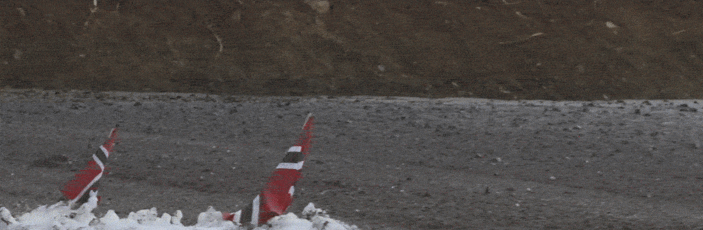
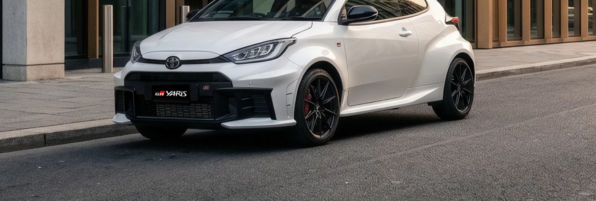
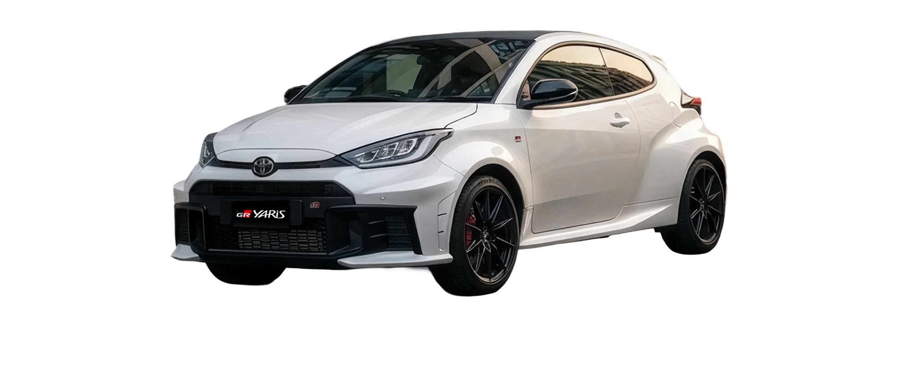
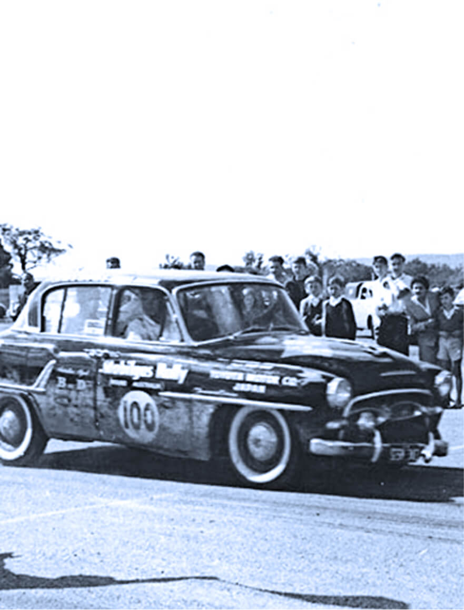
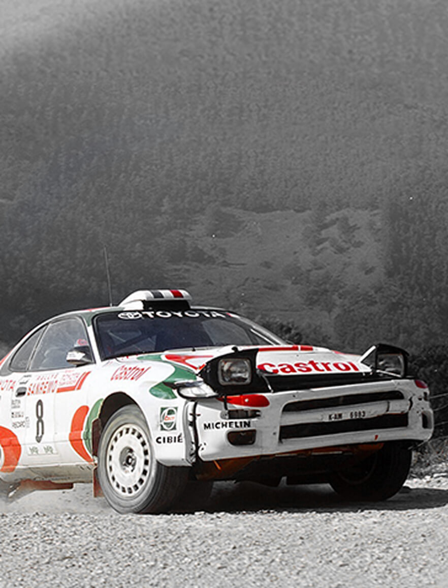
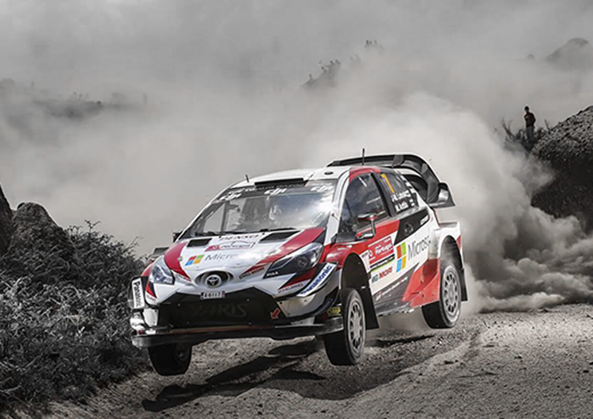
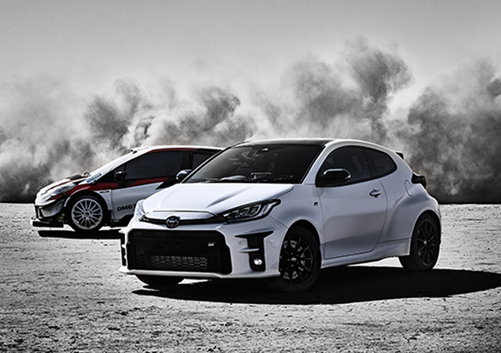
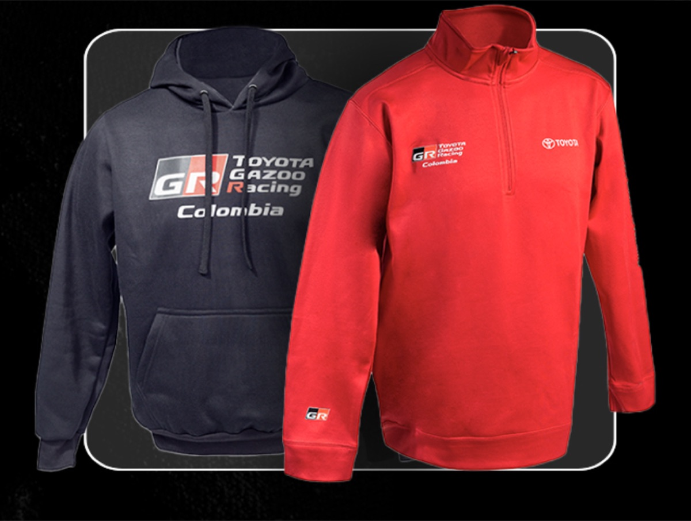

El equipo de automovilismo y los vehículos ganadores de las competencias más retadoras del mundo.
GR Garage
GR: deportivos puros de pista. GR SPORT: ese aprendizaje llevado a modelos de calle.

Nos inspiramos compitiendo en todo tipo de caminos. Nos inspiramos a construir vehículos cada vez mejores.


Los inicios
Cuatro etapas, del primer rally en 1957 a las coronas de resistencia.
-

1957 // 1986El primer rally
La historia del automovilismo para Toyota comienza en un rally.
-

1990 // 1999En la cima del WRC
En los 90, Toyota alcanzó una gran racha ganadora.
-

2000 // 2018El regreso
Toyota regresa al campeonato mundial de rally.
-

2018 // HoyCorona y nombre
Tres coronas seguidas del FIA WEC. En 2026 suelta el prefijo y vuelve a llamarse GAZOO Racing.
Forjado en pista
Los GR en su terreno: ruta, pista y nieve.
*Imágenes de referencia
Boutique GR
Llévate la marca contigo.

Marketplace Colombia
Ropa y accesorios oficiales de GAZOO Racing Colombia, con despacho a todo el país.
Ver la boutiqueLa competencia hace mejores a los autos. Y a las personas.